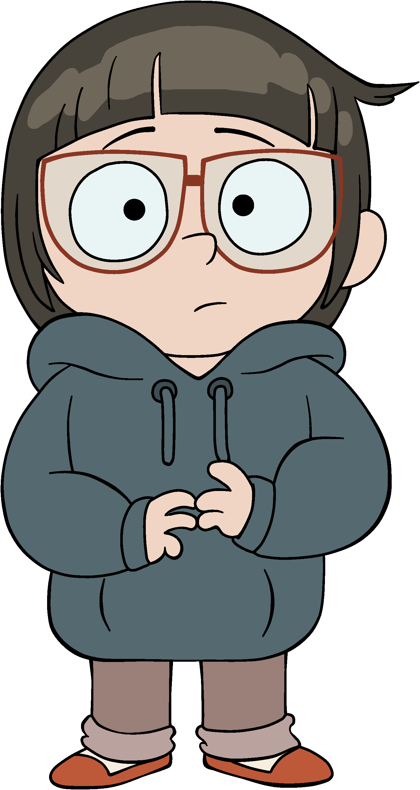
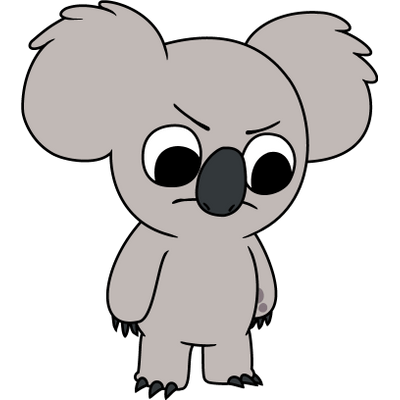
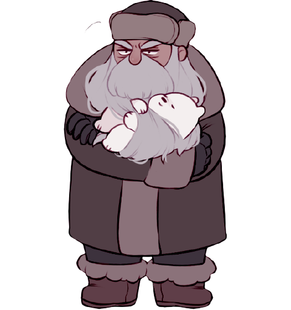
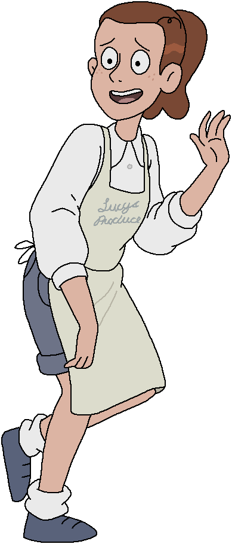
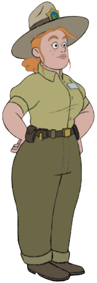

Chloe Park
Niña prodigio de 10 años, coreana, se saltó varios cursos e
ingresó a la Universidad de California. Se sabe que estudia una
carrera relacionada con biología, química y física. Le cuesta
socializar, pero los osos le ayudan a hacer amigos. Su sudadera
fue un obsequio de sus padres por entrar a la U. Quiere mucho a
Polar y le comparte sus aventuras y anécdotas.

Charlie
Es un Pie Grande que escapa de los humanos, por que quieren
tomarle fotos. Cuando se hace amigo de los osos, se ve que es
socialmente inadaptado, de vez en cuando entra a la casa de ellos
sin previo aviso, usa sus cosas y llega a irritarlos. Habla
frecuentemente con animales del bosque, como si fuesen viejos
conocidos. Siente un gran cariño hacia Panda, a quien considera su
mejor amigo.

Nom Nom
Es un koala estrella de Internet, hace videos tiernos, tiene mal
carácter y un ego alto. Su relación con los osos es variable. Con
el tiempo, su carácter mejora, empieza a sentir simpatía por Pardo
y descubre que abrazarlo calma su ira y mejora su carácter.
Confiesa que Pardo es su único amigo de verdad y lo invita a pasar
unas vacaciones a su lado.

Yuri
Es un viejo ermitaño ruso que crio a Polar cuando éste era sólo un
cachorro. En el pasado tuvo una esposa e hija, la hija es la amiga
de Polar, Yana. Polar parece haber tomado muchos rasgos de su
personalidad, como su estoicidad o la costumbre de hablar en 3ra
persona. Yuri debe separarse de Polar para protegerlo de los
cazadores que le seguían.

Lucy
Es una chica alegre y activa que trabaja vendiendo fruta y verdura
en un mercadillo local. Panda está enamorado de ella desde que le
salvó en una crisis por su alergia a los cacahuetes. Además es una
pésima bailarina.

Guardabosques Tabes
Vive en una cabaña ubicada en el parque donde viven los osos. Ella
se muestra demasiado confiada, persistente e incluso francamente
obsesiva con el deseo de ayudar a los osos. Su madre también era
una guardabosques y la que la inspiró a convertirse en una. Una
vez, sin que se diera cuenta, fue rescatada por Charlie, teniendo
vagos recuerdos de ello.